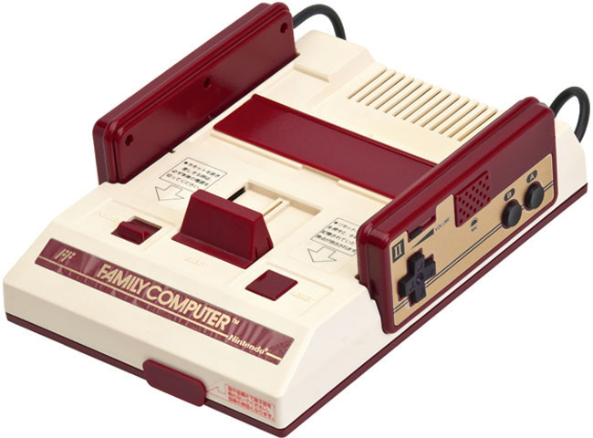

Nos encontramos en 1989. Nintendo aún cosechaba un gran éxito con su NES y sacaba su nueva portátil, la Game Boy. Pero la época dorada de Nintendo podía acabarse si no se subía al carro de los 16 bits, sobre todo después del lanzamiento de la Megadrive por parte de su competidora Sega.

Los jugadores de aquella época, fascinados por la talla técnica de los juegos de la nueva criatura de Sega, advierten el abismo existente entre los 8 y 16 bits. Los poseedores de la NES pedían a gritos la continuación de sus juegos en una máquina más potente. Era el momento en el que Nintendo se tomara en serio su nueva consola de videojuegos de 16 bits.

La compañía nipona puso entonces a trabajar a su mejor equipo de diseñadores e ingenieros. Mientras tanto, el mundo quería saber lo que se estaba fraguando en el cuartel general de Nintendo. Y para no perder la costumbre, Nintendo no soltaba prenda. Los rumores hablaban de una paleta de colores de más de 32.000 colores y de un sonido de cine, gracias al chip de sonido diseñado por Sony. La expectación crecía.
Pero en cuestión de fechas de salida, Nintendo no daba una definitiva. Quería que cuando su nueva criatura viera la luz, todos los detalles estuvieran preparados. Finalmente, y en medio de una gran presión de los medios, la gran N dio la fecha definitiva de salida: entre el verano y otoño de 1990.
Y llegó el momento. Super Nintendo era una realidad. No solo era una excelente máquina, Nintendo supo acompañar su lanzamiento con los clásicos: Super Mario World y The Legend of Zelda A Link to the Past, la continuación de los dos Zelda que salieron para NES. No acompañaron muchos más juegos al lanzamiento, pero tampoco hacía falta. Había decenas de proyectos y la calidad de los juegos era en su mayoría más que suficiente.
Entre las capacidades técnicas, las que más destacaron fueron el sonido, con calidad CD, y el llamado modo-7. Este modo era un efecto pseudo-3D, de lo más sorprendente para la época. Entre los primeros juegos que lucieron este modo fue el clásico Pilot Wings, seguido por el también clásico F-Zero.
Y así llegó el otoño del 91. La Super Nintendo era lanzada en Estados Unidos con un diseño distinto para adaptarlo a los gustos estadounidenses. Las esquinas fueron acentuadas y el color de los botones se cambió a morado y violeta, aunque la forma de los mandos de control casi no sufrió variación, tan solo los colores y superficie de los botones-
Casi todo el mundo disfrutaba ya con los 16 bits de Nintendo. Faltaba el viejo continente. El año escogido, 1992. Éxito absoluto.
Hablar de Super Mario Bros es hablar de historia viva de los videojuegos, pues hasta hace no tanto era el videojuego más vendido hasta la fecha (sólo superado por Grand Theft Auto V y Wii Sports). Poca gente habrá que no lo haya probado, y de ser así, nunca es tarde para hacerlo, pues conserva como el primer día toda su jugabilidad y frescura. Un imprescindible que debería estar sin duda en la estantería de cualquiera que haga llamarse coleccionista.
Otro de esos juegos que están en la cabeza de cualquiera que haya nacido en los 80. Duck Hunt, con su inseparable pistola Zapper era el mejor ejemplo de como con una mecánica sencilla pudo conseguir un juego sublime, capaz de atrapar durante horas a miles de jugadores de todo el mundo. Quizá hoy no sorprendería algo similar, estamos acostumbrados a numerosos y diversos periféricos para nuestras consolas, pero en su momento fue toda una revolución poder utilizar una pistola para jugar en nuestras televisiones (a día de hoy, inservible en nuestras televisiones modernas, sólo compatible con televisiones CRT).
Sin duda, una de las obras maestras de Nintendo y de toda la historia de los videojuegos. Un juego sublime tanto a nivel técnico como jugable, que supo exprimir como pocos las capacidades de la NES, y que supuso un antes y un después en muchos jugadores de la época. Considerado junto a Super Mario World uno de los mejores juegos de la franquicia del fontanero por méritos propios.
Uno de los casos que demuestran el tirón que tiene el gran Mario. Super Mario Bros 2 (o Super Mario USA, como se conoce en Japón) es una adaptación del juego Doki Doki Panic al que se le modificaron los sprites de los personajes por personajes de la saga Mario, dando como resultado un juego completamente diferente al resto de juegos de la saga. Con el tiempo, se ha convertido en todo un clásico, dejando en segundo plano a “la auténtica” secuela del primer Super Mario Bros, el que aquí conocimos posteriormente como Super Mario Bros: The lost level
Estrenamos el Top 5 con el que posiblemente sea uno de los juegos más influyentes de la NES. La primera aparición de Link en la 8 bits de Nintendo tuvo una acogida espectacular, a la altura del gran juego que es. Considerado por muchos de los mejores de la saga, toda una joya que aún a día de hoy sigue dando grandes momentos de satisfacción..
Hablar de Tetris es hablar de uno de los juegos más famosos de la historia de los videojuegos. Este juego ha contado con versiones para casi cualquier sistema, y aún con casi 32 años a sus espaldas sigue estando de actualidad, siendo de los juegos más vendidos en dispositivos móviles. Todo esto no es casualidad, estamos hablando de un puzle tan adictivo como jugable, que una vez que pruebas es difícil desengancharte de el.
Tras el éxito abrumador de Tetris, sobre todo en su versión para la portátil de Nintendo, los juegos de puzle estaban de moda, y si a eso le añades la popularidad de nuestro querido Mario, el éxito estaba asegurado. Un puzle muy entretenido y recordado con cariño por muchos de los jugadores de la época, y que a día de hoy sigue manteniendo su frescura como el primer día.
Como era de esperar, no podía faltar el bueno de Link en la lista de los juegos más vendidos de NES. Su segunda entrega no es quizá la más querida por los aficionados de la saga, siendo la que más se aleja del planteamiento habitual de los juegos de la franquicia, convertido prácticamente en un juego de plataformas de acción, con un control espectacular y una dificultad ajustada que va creciendo a lo largo del juego.
Con apenas 10.000 unidades más que Excitebike nos encontramos este otro clásico, que sorprenderá a algunos al encontrarse entre los más vendidos de NES. Muy entretenido, con variedad de enemigos y escenarios, y una gran calidad técnica para la época en la que fue lanzado.
Uno de los juegos más recordados de la Nintendo NES, ya no sólo por la cantidad de copias vendidas, si no porque además era “un habitual” en los cartuchos y consolas clónicas de la época, en las que muchos lo disfrutamos. Su sencillez, control y sobre todo sus altas cotas de diversión hacen de el un clásico imprescindible.